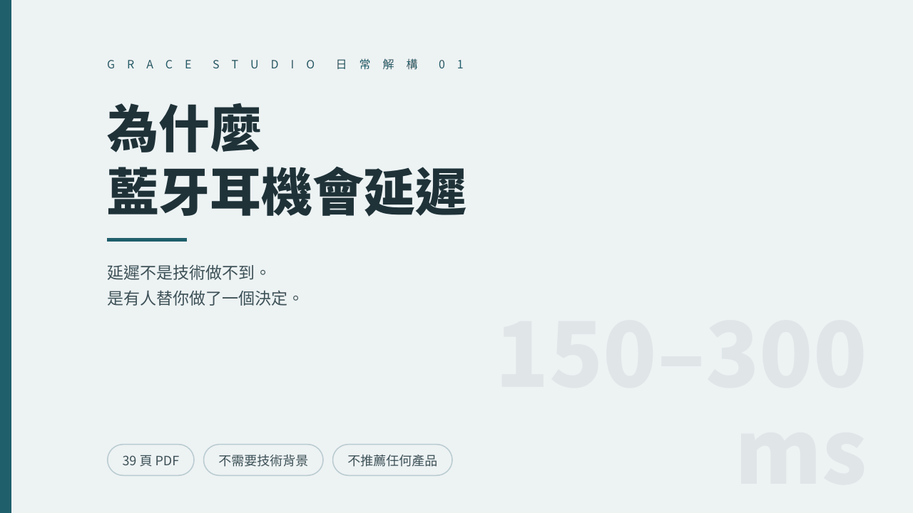
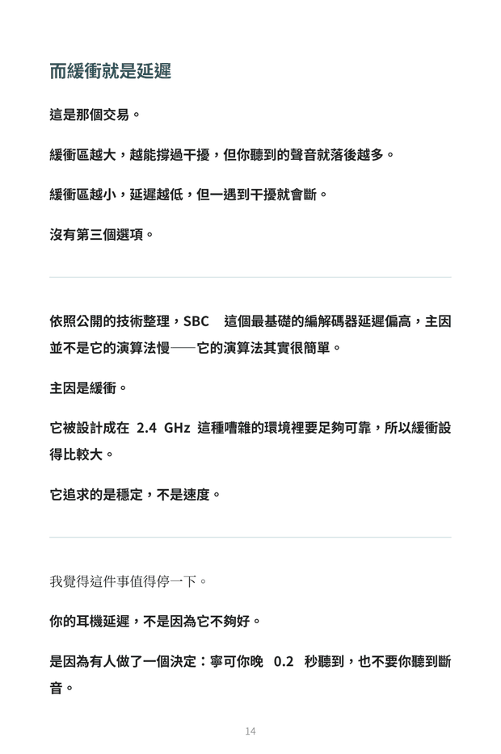
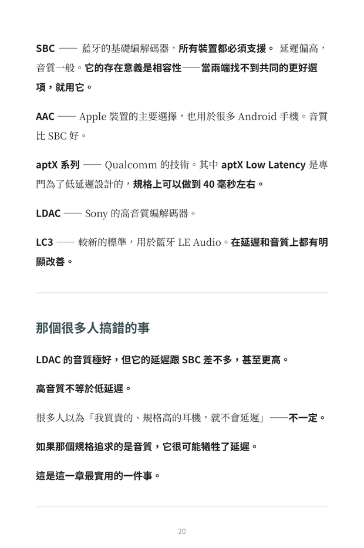
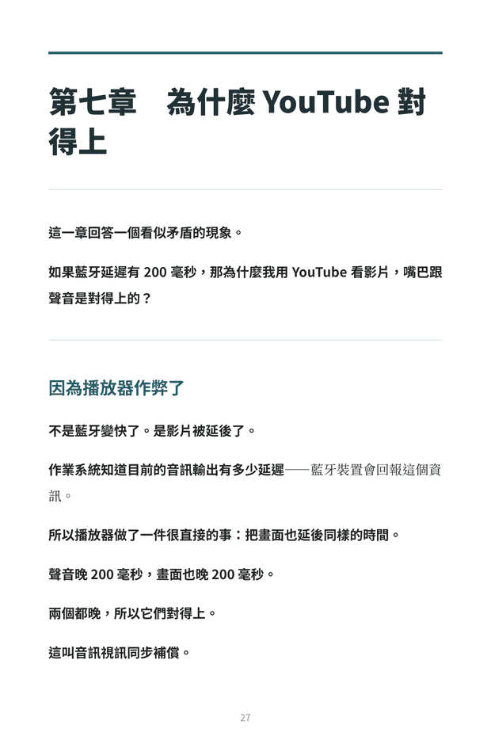

SBC 延遲高，不是因為演算法慢
它的演算法其實很簡單。高延遲主要來自緩衝——被設計成在 2.4 GHz 這種嘈雜的環境裡要夠可靠，所以緩衝設得比較大。它追求的是穩定，不是速度。
The Vault / BU-03 / 日常解構 01




左右滑動查看內頁 · 內頁實拍。
BU-03 · 日常解構 01 · 已上架
「延遲不是技術做不到。是有人決定，寧可你晚 0.2 秒聽到，也不要你聽到斷音。」
你聽到的，是零點幾秒前的聲音。
這是「日常解構」系列的第一本。
「工程解構」問的是「這東西怎麼運作」，這條線問的是「為什麼它有那個讓我困擾的缺點」。你是被延遲困擾過才會點進來——所以最後一章會回答「所以我能做什麼」。
NT$ 400 一次付清
結帳與檔案交付由 Gumroad 處理，本站不接觸你的付款資訊。
Seven Things
它的演算法其實很簡單。高延遲主要來自緩衝——被設計成在 2.4 GHz 這種嘈雜的環境裡要夠可靠，所以緩衝設得比較大。它追求的是穩定，不是速度。
LDAC 音質極好，但延遲跟 SBC 差不多，甚至更高。很多人以為「買貴的就不會延遲」——如果那個規格追求的是音質，它很可能犧牲了延遲。
編解碼器是協商的結果，兩端都要支援才會啟用。不匹配就掉回 SBC。你的耳機支援低延遲，但手機不支援，還是 SBC。
把手機放在褲子後面口袋，耳機比較容易斷——訊號要穿過你的身體。這也是為什麼早期的真無線耳機，某一邊特別容易斷。
不是藍牙變快了。作業系統知道目前的音訊延遲，播放器就把畫面延後同樣的時間——兩個都晚，所以對得上。
因為畫面不能延後——畫面是你操作的依據。所以遊戲的選擇正好相反：畫面照常，聲音就讓它晚。
視訊通話兩邊都不能延後，所以系統會切換到低延遲模式，犧牲音質換延遲。那是換檔，不是壞掉。
Why Ranges
同一個編解碼器，不同來源給的延遲數字差異非常大——有的寫 150 到 200 毫秒，有的寫 250 到 350。這不是誰寫錯了：規格延遲不等於實際延遲，每個作業系統的實作不同，環境會改變它，測量方法也不同。
所以書裡任何一個藍牙延遲的數字，都當成「某個特定條件下的某一次測量」處理，不是固定規格。這本書因此全部用範圍呈現，不假裝有一個精確答案。
Contents
FAQ
不能，這本書也不做這個判斷。它不推薦、不比較任何特定品牌或產品，講的是機制與取捨，不是選購指南。書中數值一律以範圍呈現，你的實際延遲取決於裝置組合、環境與編解碼器協商結果，需要精確數字應自行實測。
書中最後一章會說明降低延遲與解決斷音是兩個方向相反的取捨——你可以理解原理並知道要往哪個方向調整，但不含針對特定裝置的操作教學。
因為那個數字會依作業系統實作、環境、測量方法而變，寫成單一數字反而是不準確的。書中第五章完整解釋這件事，並全部用範圍呈現。
不是。作者是正在學習相關科目的學生，這本書是查證、比對公開資料後的整理。
本商品為非以有形媒介提供之數位內容，依《消費者保護法》第 19 條及《通訊交易解除權合理例外情事適用準則》第 2 條第 5 款，經你於結帳前明示同意後發送存取權限者，不適用七日解除權，因此不受理一般性退款。
但若檔案本身無法開啟、內容損毀或交付品項錯誤，仍可於 7 日內來信申請修復或退款——這是法定的瑕疵擔保責任，不受前述條款影響。
日常解構 01
39 頁 PDF 加 EPUB，七件你大概不知道的事，最後回答所以你能做什麼。